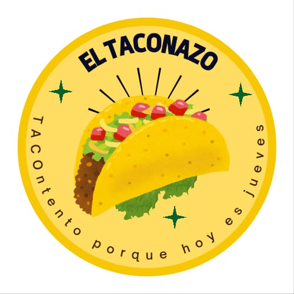

El Taconazo

En El Taconazo, somos apasionados por los tacos y nos dedicamos a ofrecerte los mejores sabores tradicionales de México en cada mordida. Ubicados en el Insibo Santo Tomás, nuestro objetivo es brindar una experiencia auténtica con ingredientes frescos y recetas clásicas que capturan la esencia de la gastronomía mexicana.
Desde los tacos al pastor hasta los de carne asada, cada platillo es preparado con dedicación y sazón, garantizando que cada visita a El Taconazo sea inolvidable. Si buscas tacos llenos de sabor y tradición, ¡este es tu lugar!
Ingredientes
Para la carne:
-Carne Molida -Cebolla -Chile Verde -Consome -Tomate -Salsa Natura
Para el chimol:
-Tomate -Cebolla -Cilantro -Pepino -Limon -Sal -Pimienta
Menu:
3 Tacos 1 Fresco = $2.00 4 Tacos 1 Fresco = $2.50 Individual = $0.50